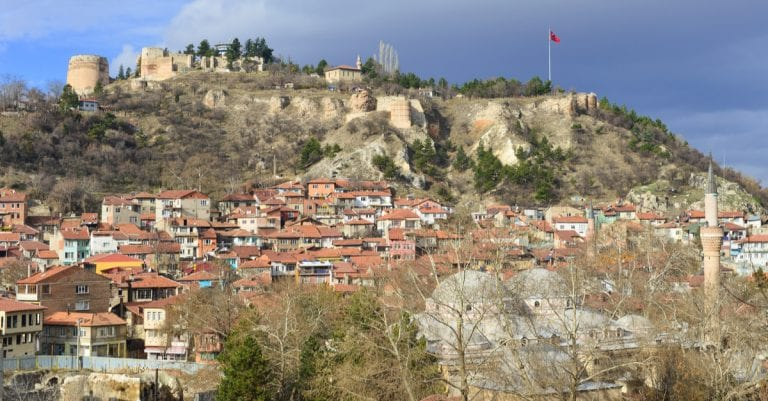

Binlerce yıldır Friglerden, Selçuklulara kadar pek çok medeniyete ev sahipliği yapan Evliya Çelebi’nin
memleketi Kütahya tarihi yerler listemiz sizlerle;
Kütahya tarihi hakkında; Antik Çağ’da “Cotyaeum” olarak bilinen Kütahya, Marmara’dan Mezopotamya ovalarına
giden büyük üzerinde uzanmaktaydı ve ticaret yollarının değişen önemine göre gelişmiş ya da gerilemiştir.
Şehir, 5000 yıllık bir tarihe sahiptir. Bölgede Hititler, Frigler, Persler, Makedonlar, Bizanlar,
Selçuklular ve Osmanlılar gibi tarih sayfalarında önemli yer edinmiş medeniyetler varlık göstermiştir.
Orta Çağ’dan kalma bir Bizans kenti olarak 11. yüzyılın sonlarına doğru Selçuklu Türkleri tarafından ele
geçirilmiştir. 1302’den 1429 senesine kadar Germiyan Türkmen Beyliği’nin başkenti olan şehir, daha sonra
Osmanlı İmparatorluğu’nun bir parçası olmuştur. 16. yüzyılda Kütahya, Osmanlının seramik endüstrisi
noktasında en önemli merkezi konumuna erişmiştir. Türkiye’nin ve özellikle Ortadoğu’nun birçok cami ve
kilisesine değerli seramik çalışmalarını tedarik etmiştir.
19. yüzyılın sonlarına doğru komşusu olan Eskişehir’in büyümesi ile Kütahya gölgede kalmıştır ancak 20.
yüzyılda bölgedeki sanayi anlamındaki gelişmeler, Kütahya’nın yeniden canlanmasını sağlamıştır.
Kütahya’nın en ünlüleri; Kütahya’yı da içine alan Frig Vadisi önemli oluşumlardan biridir. Aizanoi Antik
Kenti ise Kütahya’nın en meşhur tarihi yerleri arasında bulunmaktadır. Kütahya Kalesi de şehrin simge tarihi
yerlerinden biridir. Çinileri ile meşhur Kütahya’ya gelmişken Çinili Cami’yi de görmemek olmak elbette.
Dönenler Camii de Kütahya’nın görülmesi gereken manevi durakları arasında bulunuyor.

1.KÜTAHYA KALESİ
Burası neresi? Kütahya’nın simgelerinden olan Kütahya Kalesi, Bizanslıların 5. yüzyılda yaptırdığı kale ve
burçlardan oluşuyor. Zamanla Türklerin eline geçen kale, Selçuklu, Germiyanoğulları ve Osmanlılar döneminde
onarım ve eklemelerden geçerek daha da geliştirilmiş. Ünlü gezgin Evliya Çelebi’nin verdiği bilgilere göre
zamanında kalenin 72 tane burcu olduğu söyleniyor. Günümüzde yıpranmış olsa da hala ayakta kalan kale, moloz
kesme taş ve tuğladan inşa edilmiş. Kalede 2017 senesinde başlatılan restorasyon çalışmaları dönem dönem
devam etmektedir.
Neden gitmeliyim? Kalenin bulunduğu alanda Osmanlı döneminde inşa edilen meşhur cami Kale-i Bala ve
Cumhuriyet döneminde inşa edilen eski bir gazino işletmesi de yer alıyor. Bu gazino “Döner Gazino” olarak
adlandırılmaktadır ve 45 dakikada bir 360 derece etrafında dönmektedir. Oldukça dik bir yamaca inşa edilen
kalenin bulunduğu alana çıktığınızda, Kütahya’nın manzarasını seyre dalabilirsiniz. Burası aynı zamanda
Türkiye’nin 3. büyük kalesi olma özelliğine sahiptir.
Adres: Maruf, 43050 Kütahya Merkez/Kütahya

2.LAJOS KOSSUTH MÜZESİ
Burası neresi? Macar Evi olarak da bilinen yapı, 18. yüzyıldan kalma klasik bir Türk evidir. Macaristan’ın
özgürlük mücadelesinin simge isimlerinden olan avukat Lajos Kossuth, ailesiyle birlikte bu evde yaklaşık 2
yıl boyunca kalmıştır. Osmanlı Devleti, sığınmacı olarak gelen aileyi, güvenli olması nedeniyle Kütahya’da
misafir etmenin uygun olacağına karar vermiştir. Bu süre içinde Macaristan Anayasası ile ilgili çok yoğun
bir çalışma içine girerek tasarı halini ortaya çıkarmıştır.
Neden gitmeliyim? Bina 2 katlı olup 7 odadan oluşmaktadır. 19 Eylül 1982 senesinde müze olarak ziyarete
açılmıştır. Müze içinde ziyaretçiler avukata ait çeşitli eşyaları, 18. yüzyıldan kalma bir piyanoyu
görebilmektedir. Bunun yanı sıra 18. yüzyıl Türk evlerinin tipik etnografik unsurları da müze içinde
sergilenmektedir.
Adres: Börekçiler, Gediz Cd., Kütahya
3.DUMLUPINAR ATATÜRK KARARGAH EVİ
Burası neresi? Mustafa Kemal Atatürk’ün Kurtuluş mücadelesi esnasında Kütahya’da karargah binası olarak
kullanmış olduğu ev, Kütahya’daki önemli tarihi yerler arasında bulunmaktadır. Gerekli restorasyon
çalışmalarının ardından ev, 30 Ağustos 2003 tarihinde müze olarak ziyarete açılmıştır.
Adres: Zafer, 43820 Dumlupınar/Kütahya
4.FRİG VADİSİ
Burası neresi? Kütahya, Eskişehir ve Afyon‘un sınırları içinde yer alan bu geniş vadi, Türkiye‘nin en
önemli tarihi noktalarından biri. Vadi, merkeze 3 km mesafede bulunan Yeni Bosna Köyü’nde başlayarak 55 km
mesafede bulunan Ovacık Köyü’ne kadar uzanmaktadır.
Günümüze kadar çok fazla kıymeti anlaşılmamış olsa da, özellikle son dönemlerde yapılan çalışmalar ve gezi
turlarıyla daha da çok bilinmeye başladı. MÖ 11. yüzyılda Makendonya‘dan geldikleri düşünülen Friglerin yerleşim
yeri olan vadi, kayaların içine oyulmuş devasa ve hayranlık uyandırıcı güzellikteki tarihi yapılarıyla dikkat
çekiyor.
Neden gitmeliyim? Herkesin de bildiği meşhur Arog filminin de çekildi yer olan vadi, ne yazık ki hala koruma
altına alına park statüsüne kavuşmadı. Bu yüzden herhangi bir giriş ücreti ödemeyeceğiniz gibi, tarihi yapıların
bulunduğu yerlere de rahatça girip çıkabiliyorsunuz. Tarihi hiçbir mirasımıza zarar vermeyeceğinizi bilerek,
Kütahya seyahatinizde Frig Vadisi’ni mutlaka gezmenizi öneriyoruz. Umarız bu muhteşem tarihi alan, bir an önce
koruma altına alınarak gelecek kuşaklara sağlam bir şekilde ulaştırılır.
Adres: Kütahya Merkez, Kütahya
5.AİZANOİ ANTİK KENTİ
Burası neresi? Şehir merkezine 50 km mesafede bulunan Aizanoi Antik Kenti, Frigyalılara bağlı olan
Aizanitis’lerin yaşadığı yer olarak bilinmektedir. Bölgedeki kazı çalışmalarında, kentteki yerleşim
izlerinin MÖ 3000’li yıllara dek uzandığı anlaşılmaktadır. MÖ 133 senesinde ise bölgenin Roma hakimiyetine
girdiği görülmektedir.
Kent, şarap ve yün üretimi konusunda çok ileri gitmiş ve bu da kentin refah seviyesini çok yukarılara
çıkarmıştır. 7. yüzyıldan itibaren yavaş yavaş gücünü kaybeden şehir, Selçuklular zamanında Çavdar tatarları
tarafından üs olarak kullanılmış ve bu nedenle de Çavdarhisar olarak da anılmıştır.
1824 senesine gelindiğinde Avrupa’dan gelen gezginler Aizanoi’yi tekrar keşfetmiş ve bölgede araştırmalar
gerçekleştirmiştir. 1926 yılında başlayan ilk kazı çalışmaları, 1970 yıllarda hız kazanmıştır ve bölgedeki
kazılar, günümüzde de devam etmektedir.
Neden gitmeliyim? Öncelikle Anadolu’daki en iyi korunmuş Zeus Tapınağı’nın burada olması, Aizanoi’yi,
Kütahya’nın antik kentleri içinde çok önemli bir noktaya taşımaktadır. Yaklaşık 15 biner kişilik tiyatro ve
stadyum da şehrin büyüklüğünü görmek açısından çok önemlidir. Bunlar dışında şehirde daha görülebilecek
birçok irili ufaklı antik kalıntı bulunmaktadır.
Adres: Yukarı, Cumhuriyet Cad., 43710 Çavdarhisar/Kütahya
6.GERMİYAN SOKAĞI
Burası neresi? Bir şehrin tarihi dokusunu anlamak için sokaklarına bakmak bile yeterli. Yüzlerce yıldır
şehrin sokaklarında yaşanan izleri taşıyan kaldırımların, nelere şahit olmuş olabileceğini düşünmek bile
tarihte uzun bir yolculuğa çıkmamıza neden olabiliyor. Tarihi sokakların içinde yer alan tarihi evler, ve o
evlerin içinde yaşanan pek çok farklı hayat, bazen içimizi burksa da, bazen ruhumuzu dinlendiriyor.
Kütahya’nın bu tarihi izlerini taşıyan sokakları ve evleri ise hemen merkezinde yer alıyor.
Neden gitmeliyim? Merkez’de yer alan çini heykeline oldukça yakın konumda bulunan sokaklardan en çok
bilineni, tarihi Germiyan Sokağı. Osmanlı döneminin izlerini taşıyan evler 19. yüzyıl mimarisine sahip.
Arnavut kaldırımlı dar sokakların içinde yer alan evler, iki katlı mimarisiyle klasik bir Osmanlı evi.
Günümüzde de konut olarak kullanılan evleri ziyaret etme şansınız yok, ancak sokakta gezerken hissedeceğiniz
tarihi his bile yetebilir.
Adres: Pirler, Germiyan Cd. No:11, 43030 Kütahya Merkez/Kütahya
7.HIDIRLIK MESCİDİ
Burası neresi? Kütahya tarihi yerler listemize tarihi Hıdırlık Mescidi ile devam ediyoruz. Hıdırlık Tepesi
diye adlandırılan Kütahya’nın güneyindeki bölgede bulunan tarihi mescit, 1243 yılında İmadüttin Hezar
Dinari’nin isteğiyle inşa edilmiş.
Neden gitmeliyim? Tek kubbesi ve kare yapısıyla dikkat çeken Selçuklu eserlerinden olan mescit, oldukça
küçük olmasına rağmen özellikle önündeki ağaçlı kayayla dikkat çekiyor. Tepede yer aldığı için harika bir
manzaraya da sahip olan mescit, son olarak Vakıflar aracılığıyla 2004 yılında restore edilmiştir ve şehri en
güzel bir şekilde gösteren yerlerden biri olması, burasını ilgi çekici kılmaktadır.
Adres: Hamidiye, Üçler Sokak, Kütahya